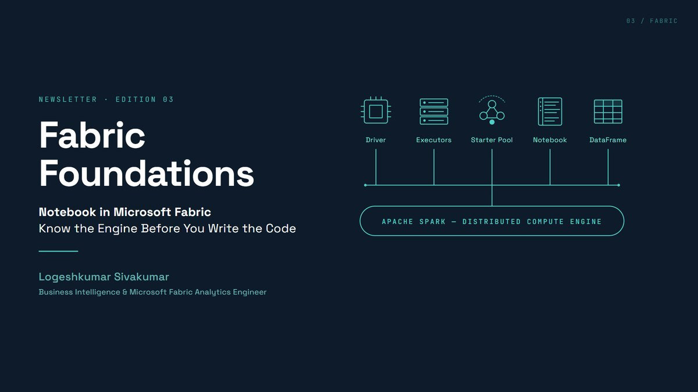

Notebook in Microsoft Fabric: Know the PySpark Engine Before You Write the Code
Logeshkumar Sivakumar · August 12, 2026 · 3 min read

Most BI professionals open their first Notebook in Microsoft Fabric without knowing what runs it. No cluster to configure. No infrastructure to manage. The code just works. Until something takes nine minutes instead of three, and you have no mental model for why. That gap starts with the compute engine.
What PySpark actually runs on in Microsoft Fabric
Apache Spark is an engine that processes data in parallel across multiple machines. When a dataset outgrows one computer, Spark splits it into partitions and processes them simultaneously across a cluster. The cluster has two roles: the Driver coordinates work and holds your code, while Executors process tasks on their assigned partitions.
In Microsoft Fabric, you never provision clusters directly. You get two pool types.
A Starter pool is pre-warmed and starts sessions in seconds, using Medium nodes (8 vCores, 64 GB) with autoscale enabled. For development work, the starter pool handles almost everything. A Custom pool lets you choose node sizes and scaling behaviour, but starts slower unless configured as a live pool. You reach for custom pools when you need specific memory, private networking, or workload-level tuning.
One distinction that trips people up:
- Autoscale adds or removes whole nodes between a minimum and maximum.
- Dynamic Allocation adjusts executor count within those nodes based on the job's data volume. They solve different problems at different layers.
Why Lazy Evaluation changes how you think about errors
PySpark transformations like filter, select, and withColumn do not execute when you call them. Spark builds a plan and waits. Only an action (show, count, write) triggers actual computation.
This catches people coming from Power BI and DAX off guard. You write five lines of transformation code. No errors. Then you call '.show()' and everything breaks. The error is not in show(). The error lives three lines up, in a filter or a cast that Spark had not evaluated yet.
Once you expect that delay between writing and executing, you stop hunting in the wrong cell.
The four moves behind every PySpark pipeline
The PySpark DataFrame API reduces to four operations: read, transform, aggregate, write.
- Read a Delta table from your Lakehouse with spark.read.table().
- Transform by filtering bad rows, trimming text columns, casting types.
- Aggregate to a summary with groupBy and agg.
- Write back to a new managed Delta table with saveAsTable().
That sequence is bronze to silver to gold in code. Joins, window functions, complex aggregations are richer versions of these same four moves. And you can switch to Spark SQL in any notebook cell with %%sql. Both approaches share the same Spark session, so a table you wrote with PySpark is immediately queryable with SQL in the next cell.
When the pool matters more than the code
Clean PySpark on the wrong pool wastes capacity units. The starter pool handles development workloads well. Push production-scale data through the same pool and you hit throttling that no code tuning fixes. Knowing when to move to a custom pool, and which node size fits the job, separates someone who writes PySpark from someone who engineers with it.
References:
- Apache Spark compute for Fabric - https://learn.microsoft.com/fabric/data-engineering/spark-compute
- Develop and run Fabric notebooks - https://learn.microsoft.com/fabric/data-engineering/author-execute-notebook
- Apache Spark Runtimes in Fabric - https://learn.microsoft.com/fabric/data-engineering/runtime
Previous in this series: The Mental Model Behind Microsoft Fabric | How the Microsoft Fabric Lakehouse Actually Works Inside
#PySpark #MicrosoftFabric #SparkCompute #FabricNotebook #DataEngineering #PowerBI #ApacheSpark #DeltaLake